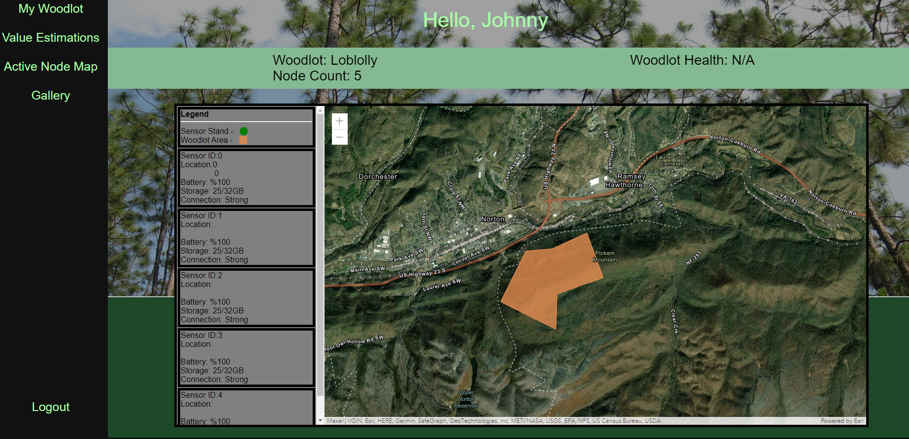
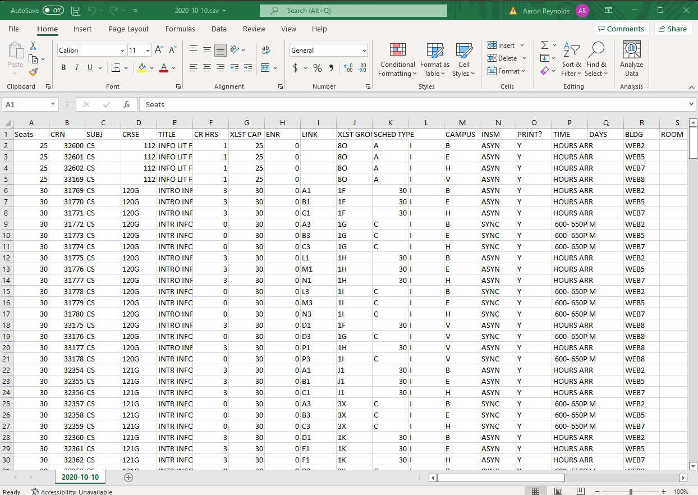
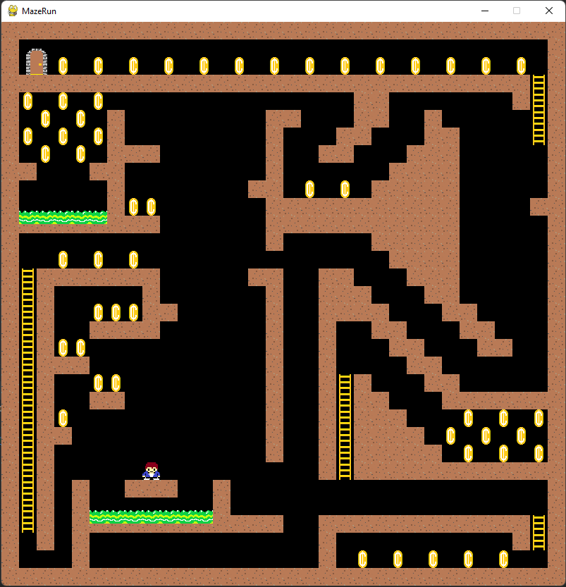
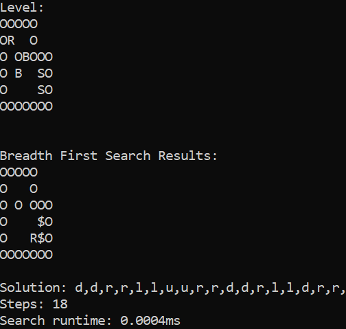

Aaron Reynolds
🖥️ Software Engineer 🤖
👨🏽🚀 About Me
Hello! My name is Aaron Reynolds. I am a recent Computer Science graduate from Old Dominion University. Before that, I attended Southside Virginia Community College for an Associate's degree in Science. However, it wasn't until attending ODU that my coding journey began. In my 2.5 years at ODU, I learned concepts regarding programming, problem-solving, the software development process, and much more.
Currently, I am looking for employment as a junior software engineer so that I may build upon my foundation and begin my career in the tech field. I would love to help create or maintain software that solves challenging problems and makes a difference. Until then, I plan to write a great deal of code and learn as much as possible. My past projects include, to a great extent, my coursework from ODU: Sokoban-Solver, Sodoku-Solver, Connect-4-Enemy, University Enrollment Projections, and a software prototype for tracking forest health. That is just naming a handful.
From this point forward, I plan to continually strengthen my understanding of data structures and algorithms, continue building my programming and problem-solving skills, and continue learning technologies including but not limited to: Node.JS, Three.JS, React, Flask, OpenCV, TensorFlow, Rust, and AWS.
Links
   🚀 Projects
Forester-in-a-Box
• A prototype to a hardware/software solution aimed at providing the private woodlot owner with timely forest management recommendations based on sensor data gathered in their woodlot• Collaborates in an Agile Test-Driven Development team
• Works specifically on writing front-end code, back-end code, and integrating the ArcGIS API for interactive web maps
• Uses Visual Studio Code, HTML/CSS, PHP, JavaScript, Python, MySQL, MySQL Workbench, GitHub, GanttLab
Projected Enrollments
• Command Line Application that parses .csv files from a large database of historic and current class enrollments to predict future enrollments, output results to the CLI, and save results to a Microsoft .xlsx file at a given destination• Collaborated in an Agile Test-Driven Development team
• Worked specifically on Command Line Interface, Junit testing, and OpenCSV for producing spreadsheets and graphs
• Used Eclipse, Java, GitLab, OpenProject, Gradle, Junit5, OpenCSV
2D Platformer
• A 2D pixel platformer game that allows the user to run, jump, climb, collect coins, win, and lose• Implemented gravity, collision, inheritance, and events
• Created pixel art objects, sprites, and animations
• Used JetBrains PyCharm, Python, Pygame, Paint 3d
Sokoban-Solver
• A command line interface that takes an unsolved Sokoban board as input and solves it using a chosen search algorithm• Created a Sokoban game clone that runs on the command line
• Implemented breadth-first, depth-first, greedy, and A* search algorithms to solve Sokoban board
• Used C++, WSL Ubuntu, GNU make, Vim
⚒️ Work History 📖
Tutor
Old Dominion University
• Gave instruction to 100 - 200 level CS students to help them understand the basics of programming and problem solving
• Provided students with additional resources and demonstrations to aid in their understanding of course material
Custom Build Carpenter
Virginia Barn Company
• Worked independently or managed a team to accomplish project goals
• Used problem-solving skills to design solutions to unforeseen barriers
• Provided customer service to clients to ensure the company fulfilled their project vision to satisfaction
• Quickly gained proficiency with new tools or techniques to complete certain aspects of a project
Resume: Aaron Reynolds - Spring2022
Email: ajr2934@outlook.com
Resume